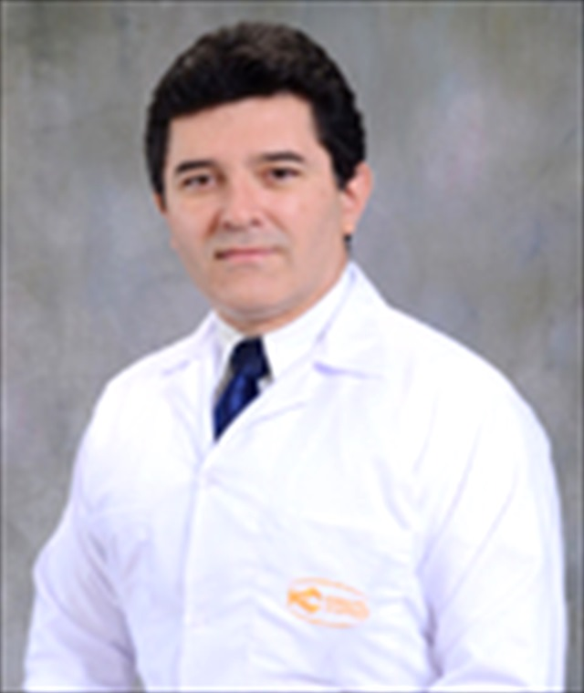

Centro LASER de Estética
Facial y corporal
Servicios de alta calidad realizados por una esteticista profesional experta en LASER FOTONA, con más de 10 años de experiencia y entrenamiento nacional e internacional.
Ver más
Ginecología especializada
Una experiencia clara para pacientes: información confiable, selección de servicio ginecológico, horarios disponibles y confirmación inmediata para la consulta médica.
Dr. Luis Diego Carazo
Atención especializada en salud íntima femenina, piso pélvico, incontinencia urinaria, hormonas bioidénticas y procedimientos ginecológicos con tecnología FOTONA.

Consulta ginecológica
El Dr. Luis Diego Carazo atiende mujeres con pérdidas de orina al toser, reír, saltar o hacer ejercicio, además de molestias como sequedad vaginal, dolor durante las relaciones o incomodidad íntima.
El tratamiento LASER FOTONA IncontiLase estimula la regeneración natural del tejido vaginal y uretral. Es un procedimiento médico, indoloro, seguro y sin tiempo de recuperación, aplicado con protocolos rigurosos.
Servicios principales
Servicios de alta calidad realizados por una esteticista profesional experta en LASER FOTONA, con más de 10 años de experiencia y entrenamiento nacional e internacional.
Ver más
Atención especializada para incontinencia de esfuerzo, salud íntima femenina y tratamientos ginecológicos con tecnología LASER.
Ver másSiguiente paso